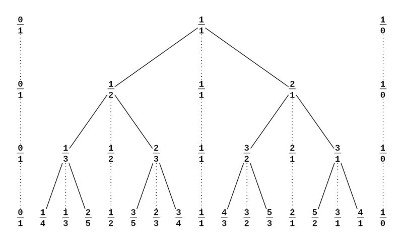
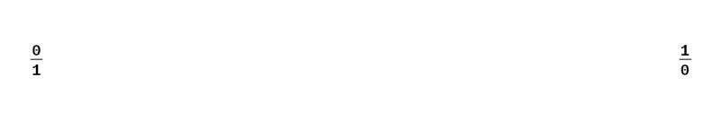
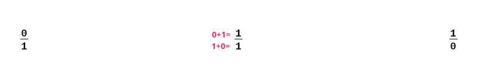
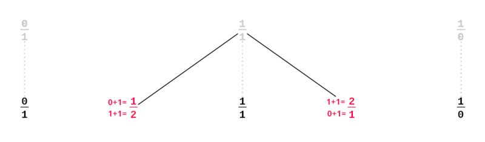
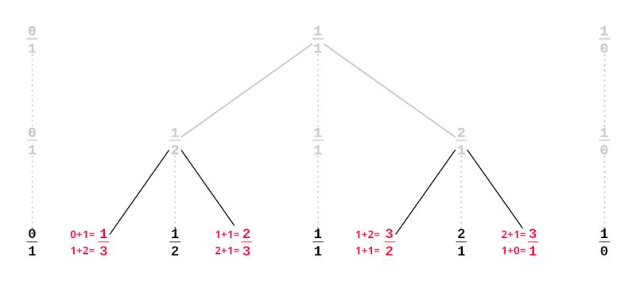
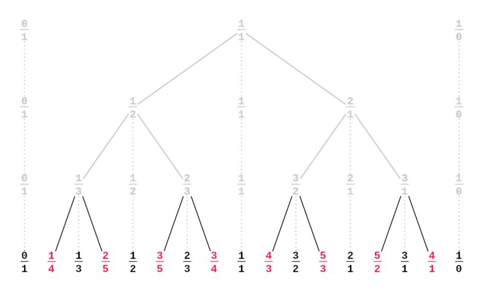

rational approximation
One day I wrote a small Python script that approximates any positive floating point number with a fraction. The idea was to find some easy-to-remember fractions that I could use to convert US units to metric in my head when watching American TV shows.
For example: 1 US mile is 1.609344 kilometers, which is approximately 8/5 km. Therefore 20 miles can be converted by doing 20 * 8 / 5 = 32 km. The actual value is 32.18688 km, which is reasonably close.
The Stern-Brocot tree

Image by Wikipedia user Aaron Rotenberg (CC BY-SA 3.0)
To find the appropriate fractions, I used the Stern-Brocot tree, which is an infinite tree that lists every positive rational number exactly once, in reduced form.
It is constructed as follows:

1: Start with the two fractions 0/1 and 1/0 (1/0 isn't really a fraction. It actually represents positive infinity, but writing it this way is convinient for the next steps)

2: Calculate the mediant of the two fractions by adding together their numerators and denominators.

3: Repeat the process with each pair of consecutive fractions, inserting their mediant inbetween.


This process lists all relative numbers exactly once. The resulting binary search tree can be used to find better and better approximation of any positive number.
Results
I ran my script for some of the most common US units. For each conversion, three fractions are given: the first one gives a result that is less than 10% away from the actual value, the second is less than 5% away, the third less than 1% away:
| src | dst | <10% | <5% | <1% | actual value |
|---|---|---|---|---|---|
| in | cm | 5/2 | 18/7 | 28/11 | 2.54 |
| in | dm | 1/3 | 1/4 | 5/19 | 0.254 |
| ft | m | 1/3 | 2/7 | 3/10 | 0.3048 |
| yd | m | 1/1 | 7/8 | 10/11 | 0.9144 |
| mi | km | 5/3 | 8/5 | 21/13 | 1.609344 |
| oz | hg* | 1/3 | 1/4 | 2/7 | 0.28349523125 |
| lb | kg | 1/2 | 3/7 | 4/9 | 0.45359237 |
| US cup | L | 1/3 | 1/4 | 3/13 | 0.2365882365 |
*1 hg = 100 g
Links
- Script on GitHub
- Stern-Brocot tree on Wikipedia